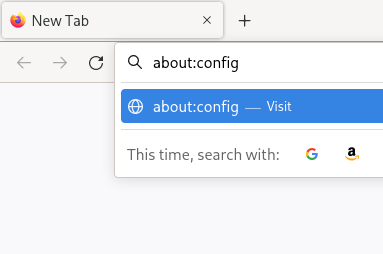
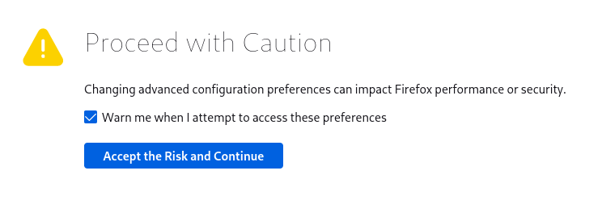
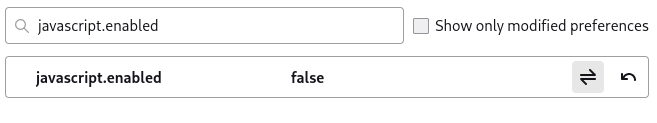

Firefox
Firefox Chromium
Chromium uBlock Origin
uBlock Origin Disabling JavaScript in Firefox
Disabling JavaScript in Firefox
- In the address bar, type
about:configand press enter.
 - If a warning is shown, click "Accept the Risk and Continue".
 - Search for
javascript.enabledand change it to false.
